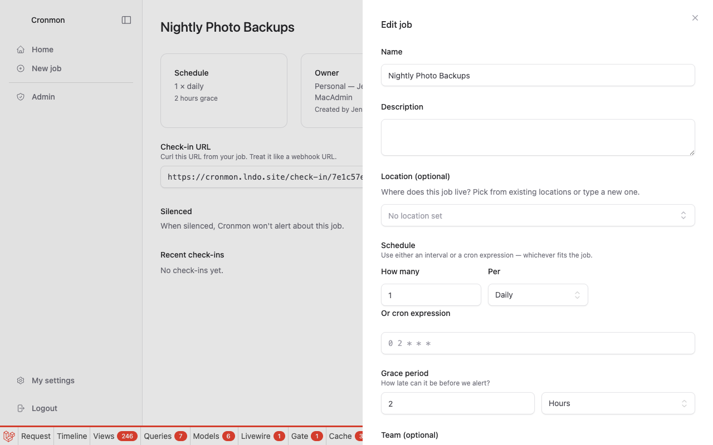
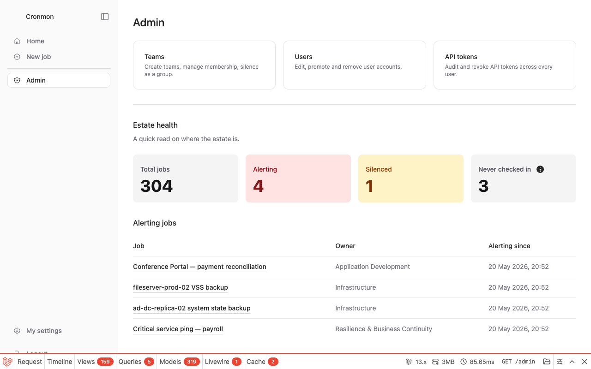
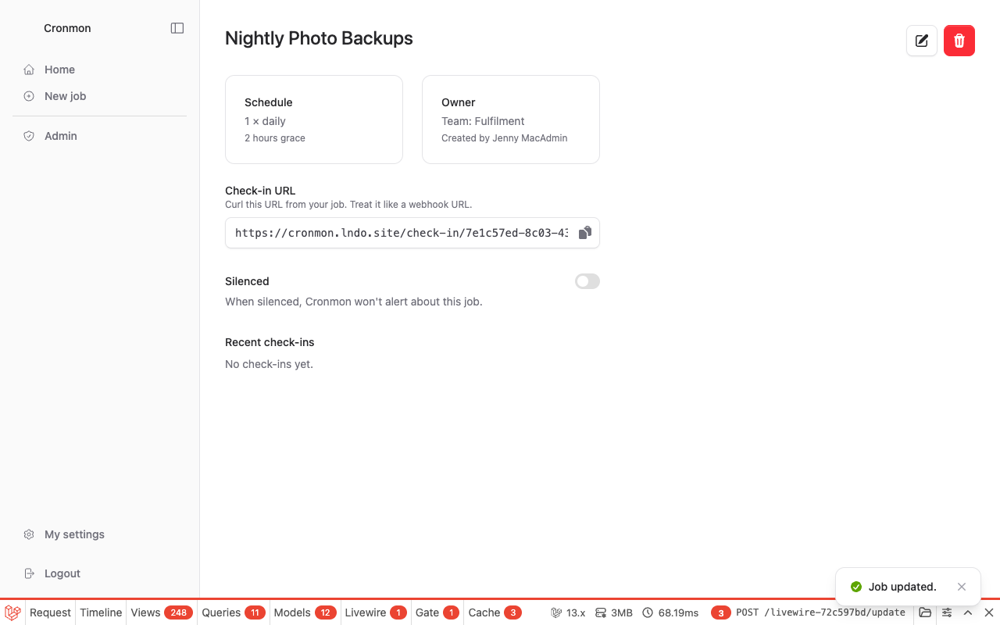

Login was unremarkable, the New job button was where instinct looked for it, and the creation form answered the manager's phrasing almost word for word: an interval picker ("1 × Daily") instead of demanding cron syntax, a grace period control taking "2" and "Hours", and a Team dropdown whose helper text — "Leave blank to make this a personal job" — resolved the "personal" requirement before it became a question. First half of the task: about a minute, zero friction.
One cloud on the horizon, noticed in passing while the form was open:
The Team dropdown only lists "Application Development" and "Infrastructure" — I don't see a "Fulfilment" team. That worries me a little for the second half of my task.
Editing the new job reopened the same form — still no Fulfilment in the dropdown, and nothing to suggest why. At this point the app has, in effect, told the user the team doesn't exist:
So my manager has asked me to assign the job to a team that doesn't exist in the system yet. Slight "…now what?" moment here.

The user's plan was now to create the missing team in the Admin area. Only on arriving there did the "By team" statistics table reveal, in passing, that Fulfilment already existed with 3 jobs:
So the team exists after all. The job form's Team dropdown must only show teams I'm a member of. That was genuinely confusing — the dropdown gave me no hint that other teams existed but were hidden from me.

Two counterfactuals worth sitting with. A non-admin given this task has no Admin area and dead-ends completely. And a hastier admin stood one click from creating a duplicate team — the New team button was right beside the evidence.
Deducing that membership gates the dropdown, the user added themself to
Fulfilment via Admin → Teams — pausing over a small identity wobble
(logged in as admin2x, but listed as "Jenny MacAdmin"; the
account email was the only bridge). Membership granted, the edit form now
offered Fulfilment, and the change saved cleanly with a "Job updated."
toast.

Verifying on the dashboard, filtering Team jobs for "Nightly Photo" surfaced dozens of other teams' nightly jobs — the filter matches any word, not the phrase — briefly suggesting the reassignment hadn't worked. Filtering on "Photo" alone found the job, correctly assigned.
It conflates "doesn't exist" with "not yours to choose", and offers no hint that anything is hidden. The observed cost for an admin: a four-step detour and a near-miss duplicate team. The cost for a non-admin: a dead end. (Log entries 3, 6, 7.)
Smallest possible fix: one line of helper text — "Only teams you belong to are shown." Fuller fix: see discussion.
The only route is: be (or become) a member, then edit the job. The team page manages members and silencing but says nothing about jobs, so the route is invisible until already known. (Log entries 9, 12.)
Logged in as admin2x, listed as "Jenny MacAdmin". A
"(you)" marker in member/user lists would remove the guesswork. (Log
entry 10.)
"Nightly Photo" matched every team's nightly jobs and pushed the actual match out of view — enough to cast doubt on a just-completed action. Requiring all words would fix it. (Log entry 12.)
| Creating the job | ~8 actions, 1 page, no friction |
| Reassigning it — plausible ideal | 4 actions, 1 page (open job → Edit → pick team → Save) |
| Reassigning it — as it went | 18 actions across 7 page visits, including a round trip through the admin area and a permanent change to team membership |
| Dead ends | 1 avoided only by admin rights; would be terminal for a normal user |
Evidence: journey-log.md (in-the-moment think-aloud log; expectations recorded before outcomes) and the shots/ directory (12 screenshots).